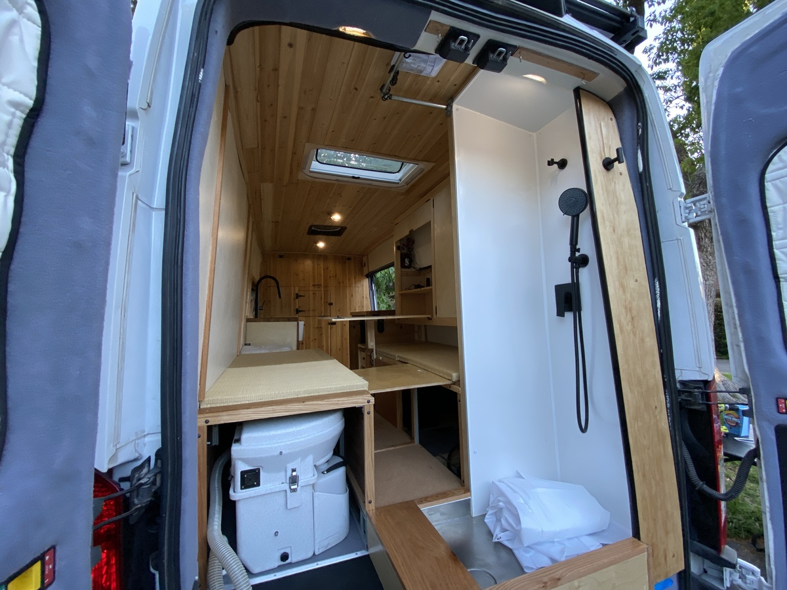
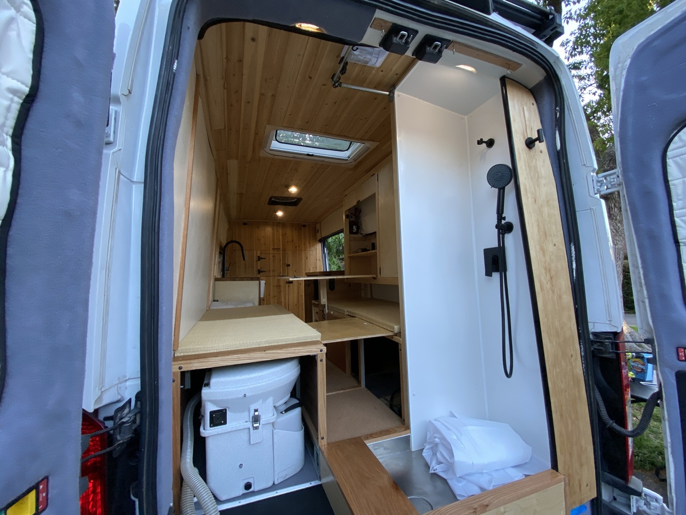
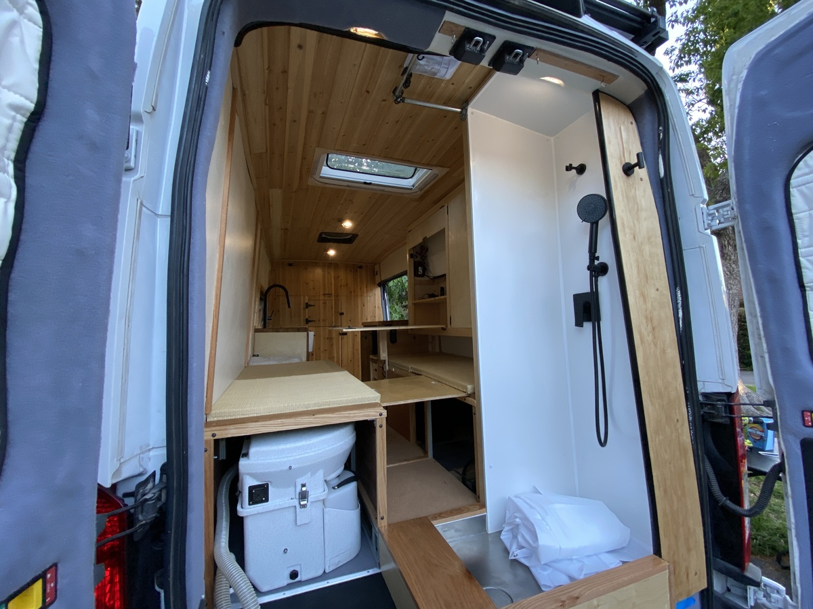

Over two years my partner and I took a bare metal cargo van and converted it to an off-grid camper van including running water, an indoor shower, a skylight, solar powered induction cooktop, engine-heated hot water, and more.
You can start at Overview or see the sidebar for quick browsing. A full list of features is found in Features.
